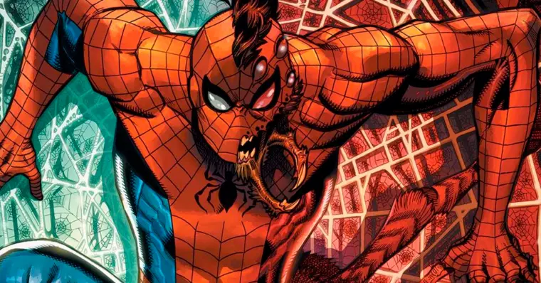
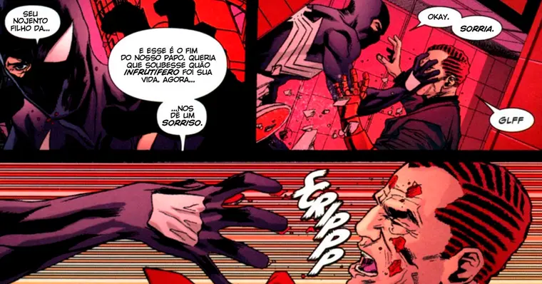
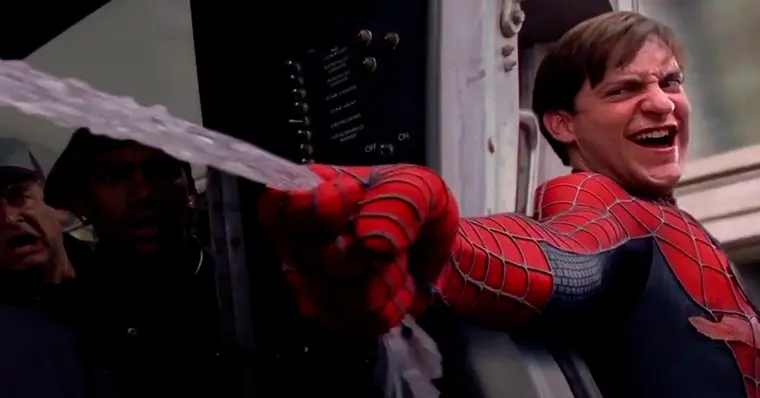
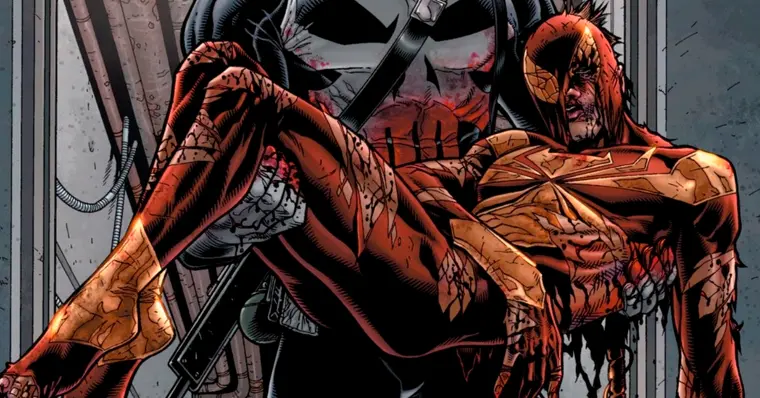
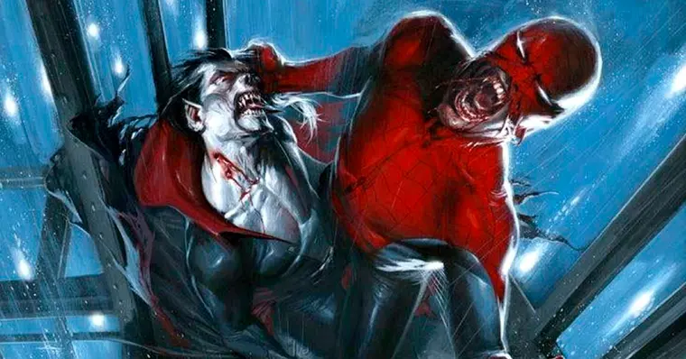
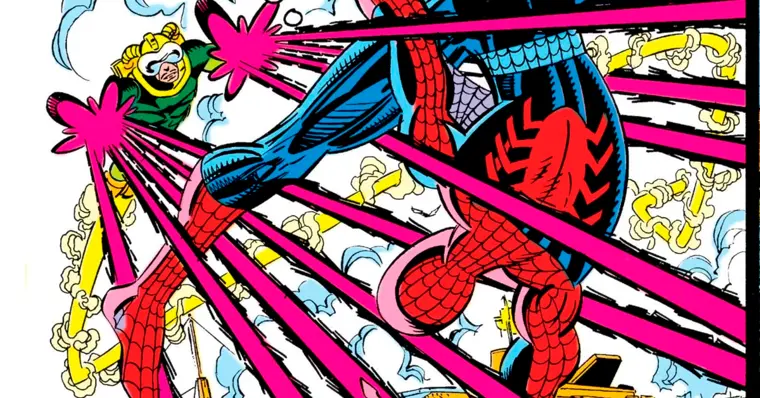
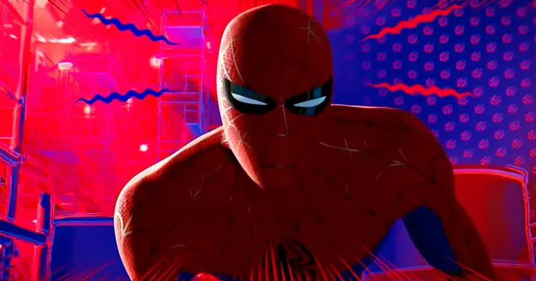
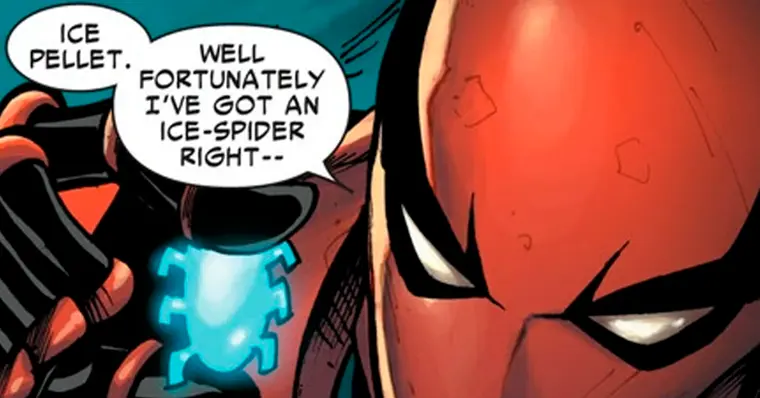
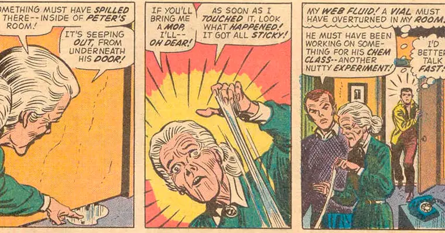
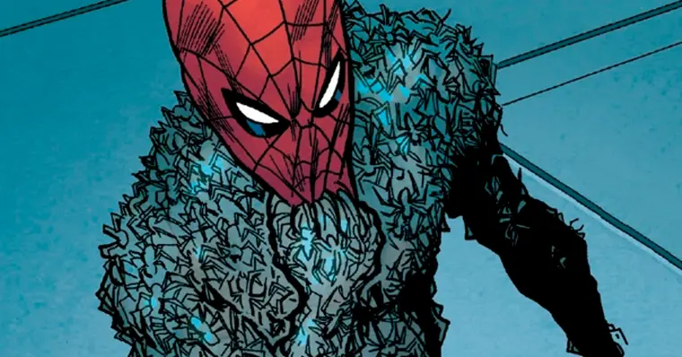

Você conhecia todos eles? Descubra tudo que Peter Parker é capaz de fazer como Homem-Aranha!

Fisiologia Aranha
Mesmo que algumas versões de Peter tenham presas ou até mesmo patas de aranha, no universo 616, o herói tem dois braços, duas pernas e habilidades proporcionais a de uma aranha. Isso vai incluir, por exemplo, a habilidade de escalar paredes.
E tudo isso, inicialmente, teve uma explicação científica, já que os poderes foram concedidos a ele após ser picado por uma Aranha Comum de Casa (Achaearanea tepidariorum), que havia sofrido mutação por ter sido exposta a certas frequências de radiação. Parker, então, teve o "padrão de cromossomo melhorado", lhe dando força, velocidade, resistência e inúmeras habilidades aracnídeas.

Marca de Kaine
Peter consegue controlar mentalmente o fluxo de atração inter-atômico entre as camadas moleculares. Em outras palavras, ele consegue se grudar em qualquer superfície. Essa habilidade o permite escalar paredes, mas já ganhou outras funções.
O clone de Parker, por exemplo, a utilizava de forma ofensiva, para queimar o rosto de suas vítimas. Mais tarde, o próprio Homem-Aranha usou o poder para escapar do Duende Verde, fazendo as pontas dos dedos se agarrarem ao rosto do vilão e o puxando com força, cavando cinco feridas profundas no rosto de Norman.

Habilidades Sobre-Humanas
Já é de praxe que alguns heróis possuam o quesito "sobre-humano" para resumir uma quantidade de habilidades que o tornam especiais. E isso não é diferente para o amigo da vizinhança.
Peter possui força, velocidade e resistência sobre-humanas. Isso o permite levantar até quinze toneladas, mas também exercer uma enorme força sobre as pernas, o fazendo ser capaz de saltar a uma altura de vários andares em um único salto.
Em relação a sua velocidade, Parker consegue se mover mais rápido que o olho pode acompanhar, sendo capaz de alcançar um carro acelerando enquanto está à pé.

Fator de Cura
Para compensar esses esforços, o Homem-Aranha possui um metabolismo acelerado e isso também o permite se healer rapidamente. Embora não esteja no nível do Wolverine, é suficiente para se recuperar de ferimentos graves em um tempo curto.
O personagem já se curou de uma cegueira após dois dias e de queimaduras graves de 3º grau. Isso já mostra que o fator regenerativo do herói ajuda não apenas no tempo de cura, mas também no impedimento de Peter ter cicatrizes de seus ferimentos.

Imunidade a Contaminações
Outra característica ligada ao seu metabolismo é a tolerância a drogas e doenças. Toxinas aplicadas no personagem podem gerar pouca ou nenhuma reação nele.
A fisiologia única do Homem-Aranha lhe permitiu, por exemplo, se recuperar dos efeitos do vampirismo, como afirmado por Blade. Seu sangue radioativo matou as enzimas responsáveis pela transformação em vampiro.
Fora isso, também podemos afirmar que é difícil de fazer o Cabeça de Teia ficar bêbado. Sem contar que a ressaca não deve ser um problema para o herói.

Reflexos e Equilíbrio
O Homem-Aranha possui a habilidade de atingir um equilíbrio perfeito em qualquer posição. Para isso, a habilidade de escalar paredes é útil, mas não é a principal aqui.
Outro ponto que o permite se mover com equilíbrio e precisão são seus reflexos. Quarenta vezes maior do que os de um ser humano comum, isso já permitiu a Peter se esquivar de uma rajada de balas usando apenas seus reflexos, sem uso do sentido aranha.

Sentido Aranha
O herói possui um sentido extra-sensorial que o alerta para potenciais perigos imediatos. Ele provoca uma sensação de formigamento na parte traseira de seu crânio, permitindo-lhe escapar da maioria dos ataques que sofre.
Para alguns, a origem dessa habilidade é a sua conexão com a Teia da Vida e do Destino, quase como uma clarividência, a qual lhe avisa de qualquer perigo iminente.
Seu sentido aranha é tão conectado aos seus reflexos que, mesmo dormindo ou atordoado, o personagem é capaz de desviar automaticamente. A habilidade é um sentido próprio e independente de qualquer outro.

Detecção de Frequência de Rádio
O sentido aranha de Peter também lhe dá a habilidade de localizar certas frequências de rádio. Munido dos rastreadores apelidados de Localizadores-Aranha, o Homem-Aranha utiliza essa habilidade para conseguir rastrear ou espionar um alvo.

Geração de Teia Orgânica
Algumas versões do personagem deixam essa habilidade de lado, sendo obrigados a fazer sua teia de forma sintética. Mas, Peter já foi capaz de produzir sua própria teia a partir de glândulas presentes em seus antebraços.
Essas teias possuíam muitas das propriedades das teias artificiais e eram lançadas pelo pulso, onde continha um orifício central usado para expelir e puxar a teia.

Alinhamento Psíquico com Artrópodes
Outra mudança genética que não se manteve por muito tempo com Peter foi a capacidade de se alinhar psiquicamente com o ambiente à sua volta, especialmente em relação a aranhas e insetos.
Peter, então, era capaz de se conectar empaticamente com diferentes populações de aranhas, mas era incapaz de se comunicar diretamente com elas ou comandá-las.